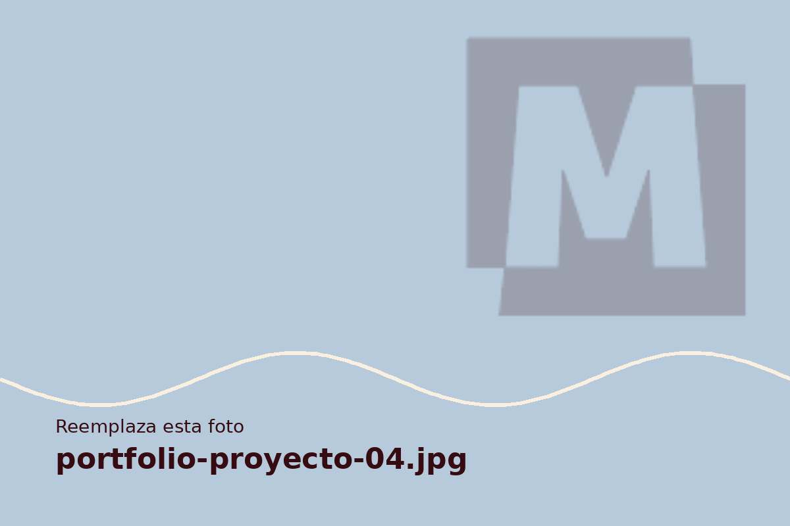

Inicio/Portafolio/Ruta 27
Audiovisual · Proyecto conceptual
Ruta 27
Video promocional conceptual para una marca de viajes.

El proyecto
Una invitación a viajar
Concepto audiovisual para una marca de viajes, pensado para presentar destinos y despertar el deseo de explorar.
Categoría
Audiovisual
Este trabajo es conceptual y no representa a un cliente real.